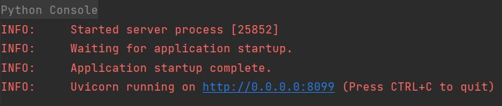
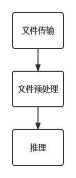

Web库FastAPI
1. 简介
FastAPI 是一种现代、快速（高性能）的 Web 框架，用于基于标准 Python 类型提示使用 Python 3.7+ 构建 API。 EasyAPI 基于该库开发。
主要特点是： 快速、运行编码快、更少的错误、直观、简单、简短、健壮、基于行业标准。
文档地址：https://fastapi.tiangolo.com/
本文涉及的部分代码见XEdu帮助文档配套项目集：https://www.openinnolab.org.cn/pjlab/project?id=64f54348e71e656a521b0cb5&sc=645caab8a8efa334b3f0eb24#public
2. 安装
可以使用使用pip命令安装FastAPI库。
pip install FastAPI
3. 代码示例
3.1 一个简单的WebAPI
几行代码就能建一个Web服务器。
from fastapi import FastAPI
import uvicorn
app = FastAPI()
@app.get("/")
def read_root():
return {"Hello": "World"}
uvicorn.run(app=app, host="0.0.0.0", port=8099, workers=1)
代码是什么意思呢？
首先代码从fastapi模块中导入了FastAPI类，该类允许我们创建一个FastAPI实例。
接着我们创建一个该类的实例。我们将其命名为app，可以使用它来定义路由和处理程序。
然后我们使用 route() 装饰器来告诉 FastAPI 这个函数处理HTTP GET请求，并且根路径（/）应该映射到此函数。因此，当用户在浏览器中输入API的根URL时，将会执行 root() 函数。
函数返回一个包含“Hello World”消息的字典。FastAPI将自动将此字典转换为JSON格式并发送回客户端。
最后，调用 uvicorn.run() 方法来启动 Web 服务器。 它需要几个参数：
app：要运行的 FastAPI 应用程序实例。
host：服务器将在其上侦听传入请求的主机地址。 在这里，它被设置为 0.0.0.0，这意味着它将监听所有可用的网络接口。
port：服务器将侦听传入请求的端口号。 在这里，它设置为 8089。
workers：用于处理传入请求的工作进程数。 在这里，它被设置为 1。
执行运行命令后，FastAPI启动成功图如下：

3.2 上传一个文件
from fastapi import FastAPI
import uvicorn
app = FastAPI()
@app.post("/upload")
async def upload_file(files: UploadFile = File(...)):
fileUpload = f"./{files.filename}"
with open(fileUpload, "wb") as buffer:
shutil.copyfileobj(files.file, buffer)
uvicorn.run(app=app, host="0.0.0.0", port=8099, workers=1)
代码是什么意思呢？
首先代码从fastapi模块中导入了FastAPI类，该类允许我们创建一个FastAPI实例。
接着我们创建一个该类的实例。我们将其命名为app，可以使用它来定义路由和处理程序。
然后我们使用 upload_file() 装饰器来告诉 FastAPI 这个函数处理HTTP GET请求，并且根路径（/upload）应该映射到此函数。因此，当用户在浏览器中输入API的根URL时，将会执行 upload_file() 函数。
函数
async def upload_file(files: UploadFile = File(...))处理了上传文件的请求并将文件保存到磁盘上，使用与请求中指定的相同的文件名。
4. 借助FastAPI部署智能应用
因为算力的限制，在很多应用场景中，负责采集数据的终端往往没有办法直接部署MMEdu或者其他的人工智能应用框架，也就是说没有办法在终端上直接推理。那么，先在服务器（或者一台算力较好的PC机）部署一个AI应用，提供WebAPI接口，让终端发送数据到这个服务器，服务器推理后返回推理结果。
这种做法和很多智能终端的工作原理是一样的。如小度、天猫精灵和小爱音箱等，自己都没有处理数据的能力，都要靠网络传送数据到服务器，然后才能正确和用户交流。目前中小学的很多AI应用，都是借助百度AI开放平台的。
在Python编程中，我们通常使用函数最小化原则来设计和组织代码。该原则的核心思想是将一个功能封装到一个函数中，使其具有高内聚性和低耦合性，以提高代码的可维护性、可读性和可重用性。
如果要借助FastAPI部署智能应用，可以考虑将其划分为三个主要的功能模块：文件传输、预处理和推理。对于每个功能模块，我们建议创建一个单独的函数来实现它。
文件传输函数：负责从外部获取输入数据并将其保存至本地。这个函数可以处理各种不同类型的数据，例如图片、音频或文本等，并确保它们被正确地格式化和解码。一旦完成，该函数将返回一个数据对象，供后续的预处理和推理函数使用。在EasyAPI的设计中，通常使用
3.2 上传一个文件中介绍的函数作为文件传输函数。预处理函数：负责将文件传输函数保存的文件加载为推理函数需要的格式，通常输入格式不一致但目标格式是一致的。
推理函数：负责利用已经训练好的模型对输入数据进行预测和分类，并返回相应的结果。
